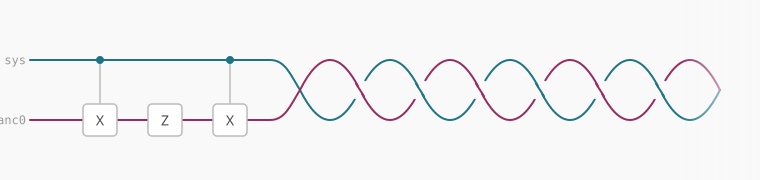

Functional programmers hate mutable variables.
Take this Python snippet, for instance. Imagine you’re reviewing a PR and you spot this:
def poll_usage():
is_backup_needed = False
...
if is_usage_high:
# toggle
is_backup_needed = not is_backup_needed
...The variable is_backup_needed feels wrong to me. This
imperative approach is anxiety-inducing. I would prefer an immutable
variable since assignment only needs to happen once. Then, there’s never
any doubt about whether the variable is “ready” to use yet. As you can
see, over time, we each develop our own preferences and coding
styles.
This same discourse around type safety, immutable variables, and software engineering best practices is not as mature in the quantum computing world. We’ll talk about it soon, but let’s return to that code snippet.
Here’s a silly (and interesting, as you’ll see soon) way to refactor it:
def maybe_invert(condition, _aux):
aux = _aux
if condition:
aux = not aux
return aux
def poll_usage():
...
is_backup_needed = maybe_invert(is_usage_high, False)
...I know it looks stupid, and in Python there are better ways, but stick with me for the payoff.
In quantum computing, the maybe_invert(...) function is
commonly called the CX gate (“C” for controlled or
conditional, “X” for NOT), and it’s used all the time.
You can run CX in superposition, so it acts on multiple
computational basis branches at once and can create entanglement. That
is one of the basic ingredients used to build algorithms that promise
speedups on future fault-tolerant quantum computers.
In practice, that looks like this:
# variable 0 is the condition
# variable 1 is the ancilla (or aux)
# The CX gate is like `maybe_invert`
qc.cx(0, 1)
# variable 1 now holds the "return value", kind ofHowever, a major pain in the ass in quantum computing is that temporary variables (ancillae) must be reset before you reuse or discard them.
qc.cx(0, 1) # compute ancilla
qc.z(1) # do something with the ancilla
??? # IMPORTANT: uncompute ancillaIf you forget to do so, you’ve committed a sin as woeful as indexing an array out of bounds or referencing an invalid pointer. Your quantum speedup will crash, your towelettes will no longer be moist, and your felt baseball cap will lose the soft touch it once had.
Quantum computing is hard because the set of things you can do with
variables (qubits) is a bit limited. It would be too easy to
simply assign aux = 0, pack your bags, and go home.
Nonetheless, Perlis said “a language that doesn’t affect the way you
think about programming is not worth knowing.”
There really isn’t much out there to help programmers catch these
issues, so I’ve prototyped a Python DSL called b01t, which
has ancilla blocks that look like this:
with ancilla(1) as anc:
compute(lambda: cx(sys[0], anc[0]))
phase(lambda: z(anc[0]))
uncompute()Heyo, that kinda speaks for itself!
By the way, the following are guaranteed:
Please try it out! https://github.com/binroot/b01t
Want to collaborate? nishant@shukla.io.